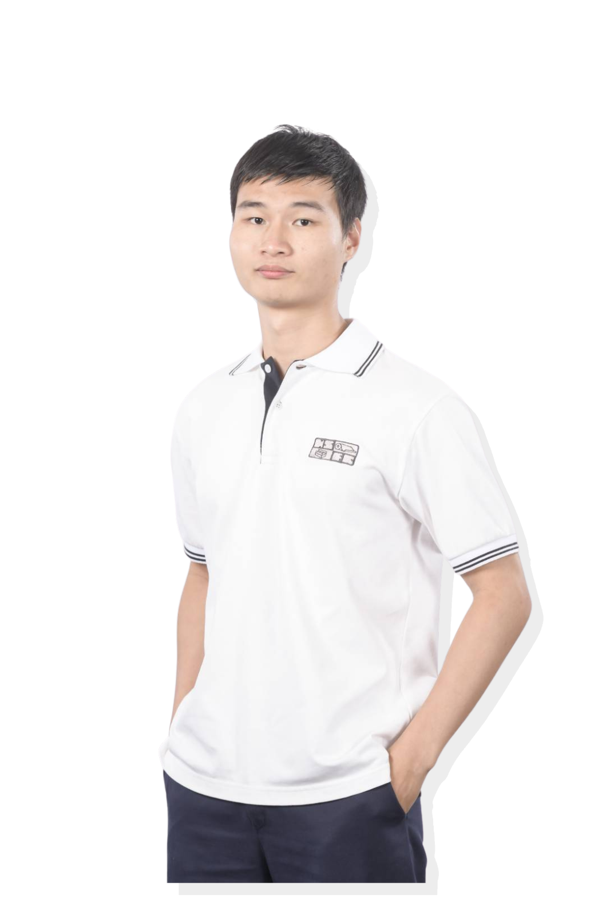

Ratchaphruek
Srisuphachoke
A Junior year student at Thammasat University, School of Global Studies, major in
Social Entrepreneurship. Aspiring to build strengths through hands-on
professional work experience in
Sale / Marketing / BD / ESG.

My Education
Bachelor of Arts in Global Studies and Social Entrepreneurship (GSSE)
- Active project-based learning.
- Design Thinking → Research → Analysis → Presentation.
- Multidisciplinary study: Society, Sustainability,
Business & Finance, and Marketing.
Selected School Projects

Research methodologies | Stakeholders interview | Research Documentation and Presentation

Urban studies Bangkok's urban planning development Bankground + Contexts + Current Practice


Awards

Proposing an idea E-waste recycling app "Ecowiz". Target to tackle e-waste sorting issue by simplify users to find nearby dropping points Ideation and pitching within 3-day Hackathon timeframe.

Academic Excellency recognition for outstanding academic grading performance.
Intern Experiences
HAPPY GROUND CARBON Co., Ltd
Research Assistant (Remote)- Conducted comprehensive market & Thai Agri landscape research across main economic crops.
- Primary research 30+ farmers interviewed on-site & on-call, Secondary document reviews.
- Synthesized complex findings into visual slide decks and present to supervisor in English.
Biochar climate-tech start-up | Scope3 supply chain corbon mitigation
Choen Ter International Trade Co., Ltd
Operations Intern- Assisted general administrative tasks for order management & packing logistics.
- Spreadsheet order management using VLOOKUP, conditional formatting & Filter for inventory tracking.
- Assisted on-site communications in English with Taiwanese live streamers
China & Taiwan export facilitator
Extra Curricular Activities
Student Clubs Experiences

Other Activities
Graduate Research Fellow / Field Researcher data collocter
Rice production in SEA
Asian Development Bank / Youth Capacity Workshop
Urban Oasis Green Bus Stop
Seed Thailand Year Four
Team project Koh Kret trip with different universities joining
Toastmaster Club
International Speech Contest 2024
Sleeping Bag Teacher Foundation
English teacher volunteer school in Sukhothai